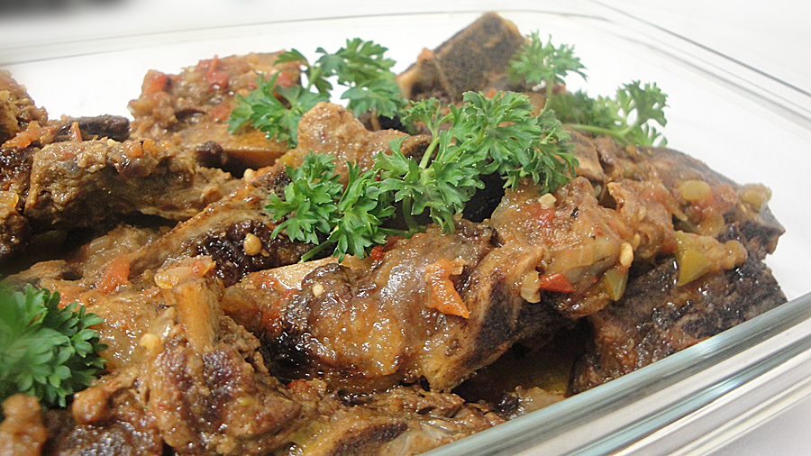

Sadza and Meaty Bones Recipes
Back to Main page

Ingredients
- 1 kg Montana meats beef bones
- 2 large tomatoes, chopped
- 1 small onion, chopped
- 2 tsp chopped garlic
- 1 beef stock cube
- 600ml boiling water
- 1/2 medium green pepper, chopped
- 2 tbsp Worcestershire sauce
- 1 tsp salt
Recipe Instructions
- Get your ingredients ready and season your beef bones with salt. Your ingredients include 1 kg Montana meats beef bones; 2 large tomatoes, chopped; 1 small onion, chopped; 2 tsp chopped garlic; 1 beef stock cube; 300ml boiling water; 1/2 medium green pepper, chopped; 2 tbsp Worcestershire sauce and
1 tsp salt.
- Heat oil in pot. Fry your beef bones in batches until they are browned. We’re doing it in batches as we don’t want to overcrowd the pot and we want to achieve an even toned browning of the beef bones.
- Add onions and curry powder. Fry for 2 min. Add the tomatoes, garlic, Worcestershire sauce and green pepper. Fry for a further 2-3 min.
- After the 2 min, put the stock cube into a measuring jug, add boiling water and mix mix until the stock cube has dissolved.Pour this stock into the pot.
- Close pot and reduce heat. Allow to simmer gently until the meat is tender and cooked through. Enjoy!
Back to Main page